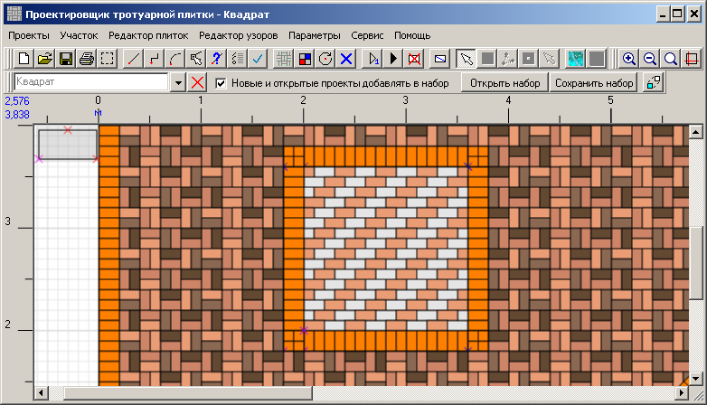

Проектировщик тротуарной плитки 2.2
Заполнение квадратов
Создаём новый проект, сохраняем его под названием "Квадрат".
В главе "Заполнение плиткой основного пространства" мы рассматривали
как по существующему макету нарисовать границы проекта. Нам нужно нарисовать квадрат с такими
границами:
Рисуем. Выбираем для узор "Стена 100x200 (простой узор)". Устанавливаем начальную точку в нижний левый угол и заполняем плиткой
в нижний левый угол и заполняем плиткой  .
.
Раскрасим плитки, как было описано раньше. Помните, что это новый проект, и перед раскраской нужно загрузить цвета. Начальное выделение плиток.
После размножения.
После раскрашивания.
Остальные плитки квадрата раскрашиваем белым аналогичным способом.
Теперь всё выглядит вот так.
Второй квадрат заполняем клонированием.
Рисуем. Выбираем для узор "Стена 100x200 (простой узор)". Устанавливаем начальную точку
в нижний левый угол и заполняем плиткой .
Раскрасим плитки, как было описано раньше. Помните, что это новый проект, и перед раскраской нужно загрузить цвета. Начальное выделение плиток.
После размножения.
После раскрашивания.

Остальные плитки квадрата раскрашиваем белым аналогичным способом.
Теперь всё выглядит вот так.
Второй квадрат заполняем клонированием.